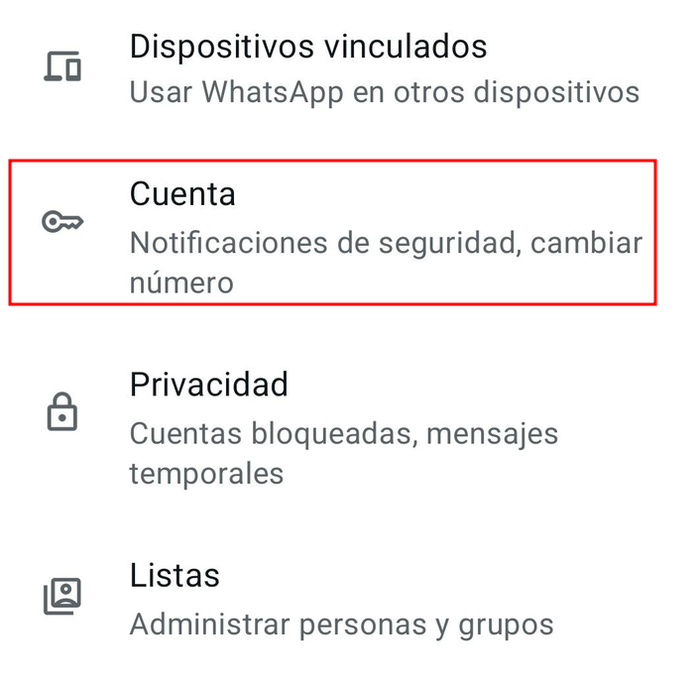
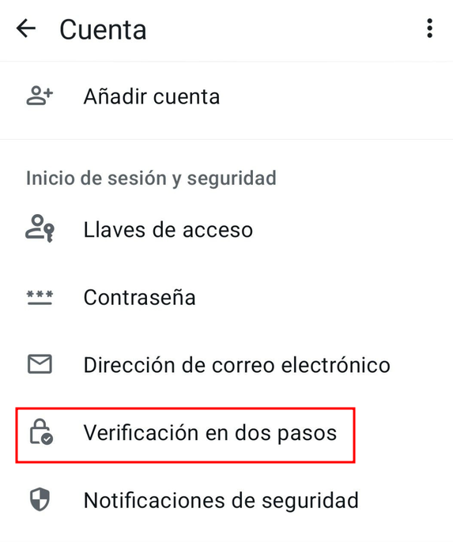
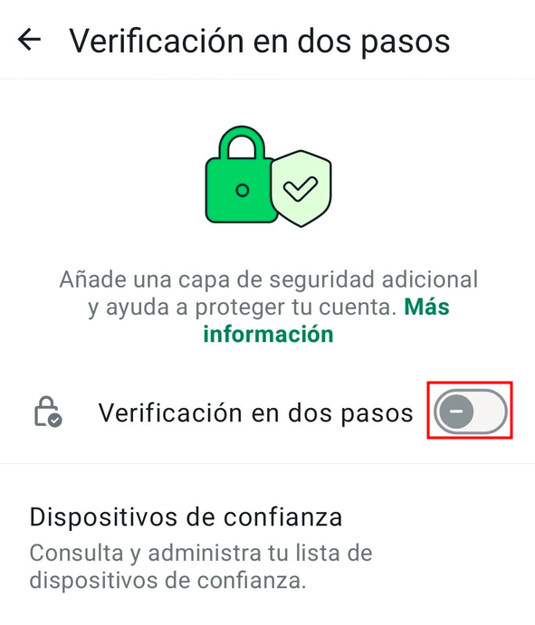
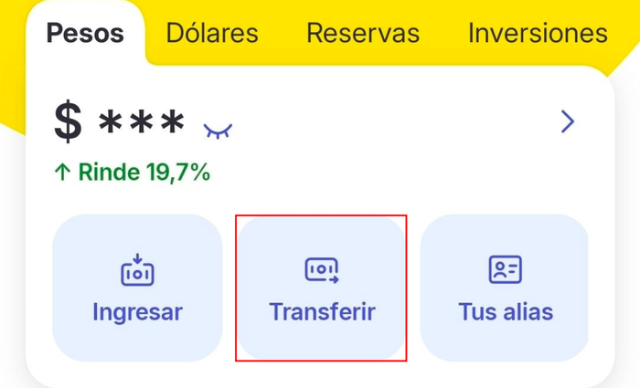
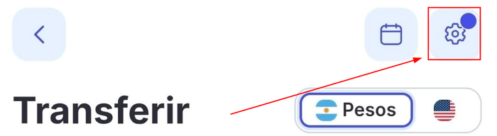
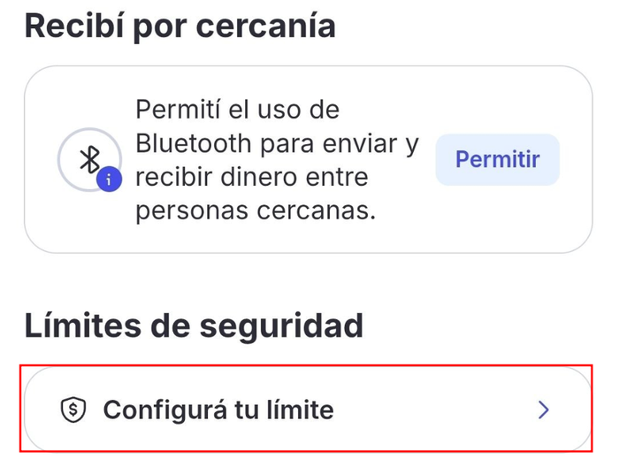
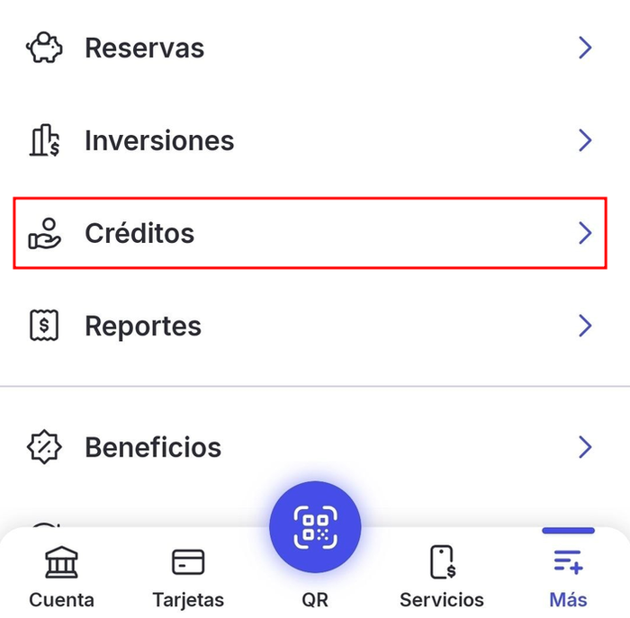

Empezá por acá
3 tareas · ~15 min
Bloqueo antirrobo del celular
Si te arrancan el celu de la mano, se bloquea solo y es mucho más difícil que lo usen.
Revisá el bloqueo de pantalla
Para que funcione, el celu tiene que tener un bloqueo de pantalla (PIN, patrón o huella).
Android: Buscá "Protección ante robo"
Abrí Configuración (o Ajustes), tocá la lupa 🔍 y escribí Protección ante robo. Entrá ahí.
Android: Activá las tres opciones
Prendé los tres interruptores. "Bloqueo remoto" necesita un chip con línea activa.
Si alguna está gris o no aparece, tu celu no la tiene. Activá las que sí estén.
iPhone: Activá la protección
Abrí Configuración > Face ID y código, poné tu código y tocá "Protección del dispositivo en caso de robo". Activala.
Hace falta iOS 17.3 o más nuevo.
¡Listo! Si alguien te arranca el celu, se bloquea y no puede entrar a tus cosas tan fácil.
PIN/Contraseña en WhatsApp
Se llama "verificación en dos pasos": aunque alguien consiga tu código por SMS, no puede usar tu WhatsApp sin tu clave.

Android: Entrá en Cuenta
Abrí WhatsApp. Tocá los tres puntitos ⋮ > Ajustes > Cuenta.

Android: Tocá Verificación en dos pasos
Dentro de Cuenta, tocá Verificación en dos pasos.
iPhone: Entrá en Verificación en dos pasos
Abrí WhatsApp. Tocá Tú > Cuenta > Verificación en dos pasos.

Activá la verificación
Prendé el interruptor de Verificación en dos pasos.
En algunas versiones, en vez del interruptor hay un botón que dice "Activar".
Creá tu clave
Creá la clave que te pida (un PIN de 6 números o una contraseña, según tu versión) y confirmala.
Anotala en papel, no en el celu.
Poné un Gmail
Poné un Gmail al que puedas entrar y tocá Siguiente.
Sirve para recuperar la clave si te la olvidás.
¡Listo! Sin tu clave, nadie puede pasar tu WhatsApp a otro celu, ni con tu código por SMS.
Mercado Pago: límite y crédito
Si alguien usa tu celu desbloqueado, no puede transferir más que tu límite ni sacar un préstamo a tu nombre.

Abrí Transferir
Abrí la app de Mercado Pago y, en la pantalla de inicio, tocá Transferir.
¿No usás Mercado Pago? Pasá los pasos y al final tocá ¡Terminé!

Tocá la ruedita
Arriba a la derecha, tocá la ruedita ⚙️ de configuración.

Poné un límite
Bajá hasta Límites de seguridad, tocá Configurá tu límite y seguí los pasos.
Elegí un monto que te alcance para el día a día. Si algún día necesitás más, lo cambiás.

Cancelá la línea de crédito
Volvé al inicio y tocá Más (abajo a la derecha) > Créditos > Detalles del límite > Cancelar línea de crédito.
¿No lo encontrás? Abrí directo la administración de créditos (te va a pedir iniciar sesión) y buscá Cancelar línea de crédito.
Ojo: no se puede deshacer. Después no vas a poder pedir créditos en Mercado Pago. Si preferís conservarla, salteá este paso y el siguiente.
Más info en la ayuda oficial de Mercado Pago.
Confirmá hasta el final
Van a aparecer varios carteles preguntando si estás seguro. Confirmá en todos hasta que diga que la línea se canceló.
¡Listo! Aunque alguien use tu celu, no puede vaciarte la cuenta ni sacar un préstamo a tu nombre.
¿Querés un poco más?
Mercado Pago: persona de confianza
Si te roban el celu, alguien de confianza puede avisar a Mercado Pago por vos.
Elegí a alguien de confianza
Pensá en alguien de confianza. Tiene que tener cuenta en Mercado Pago.
Agregá a esa persona
Tocá el botón. Si se abre la app, seguí los pasos en pantalla. Si se abre la página, iniciá sesión y seguí los pasos.
Agregar personas de confianzaRevisá la verificación
Revisá que el reconocimiento facial y el código QR sigan activos como métodos de verificación.
Revisar métodos de verificaciónAvisale a esa persona
Avisale a esa persona que la elegiste.
¡Listo! Si te roban el celu, esa persona puede avisar a Mercado Pago por vos.
Contraseñas distintas y frases largas
Si una contraseña se filtra, que no abra todas tus cuentas.
Una contraseña por cuenta
Usá una contraseña distinta en cada cuenta importante: mail, Mercado Pago, banco.
Armá una frase larga
Mejor una frase larga que una palabra rara. Por ejemplo, cuatro palabras sin relación entre sí, como mesa lluvia tractor naranja.
No uses este ejemplo: inventá la tuya.
Evitá lo fácil de adivinar
No uses fechas, nombres ni la misma de otro lado.
Guardalas bien
Anotalas en papel y guardalas en tu casa, o usá un gestor (la próxima tarea).
¡Listo! Ahora sabés cómo armar contraseñas difíciles de adivinar.
Un gestor de contraseñas
Recordás una sola contraseña y él guarda las demás. Elegimos Bitwarden: es gratis, sin límite de contraseñas y anda en Android e iPhone.
Instalá Bitwarden
Instalá la app Bitwarden desde la tienda de tu celu.
Descargar BitwardenCreá tu cuenta
Creá tu cuenta con tu Gmail y una contraseña maestra: una frase larga (mínimo 12 caracteres).
Cuidá la contraseña maestra
Si te olvidás la contraseña maestra, nadie puede recuperártela.
Anotala en papel y guardala en casa.
Android: Activá el autocompletado
En la app, entrá a Ajustes > Autocompletar (Autofill), activá el servicio y elegí Bitwarden.
iPhone: Activá el autocompletado
Abrí Configuración > General > Autorrelleno y contraseñas, activá "Autorrelleno de contraseñas y llaves de acceso" y tildá Bitwarden.
¡Listo! Ya tenés un lugar seguro para tus contraseñas.
Verificación en 2 pasos en tu Gmail
"2FA" quiere decir que, además de la contraseña, Google te pide un segundo dato. Con los códigos de respaldo en papel, igual entrás a tu mail si te roban el celu.
Abrí la verificación en 2 pasos
Abrí la verificación en 2 pasos de tu cuenta de Google.
Abrir verificación en 2 pasosActivala
Si te lo pide, iniciá sesión. Seguí las instrucciones en pantalla para activarla.
Buscá los códigos de respaldo
Cuando termines, volvé a esa pantalla, buscá "Códigos de respaldo" y tocá Continuar > Obtener códigos de respaldo.
Anotá los códigos
Imprimilos o copialos en papel. Son 10 códigos.
Guardalos en casa
Guardalos en casa, lejos del celu, con tus documentos.
Si generás un juego nuevo, el anterior deja de servir.
¡Listo! Si te roban el celu, igual podés entrar a tu mail con tus códigos.
Nadie de un banco, Mercado Pago o WhatsApp te va a pedir un código por teléfono. Si te lo piden, cortá.